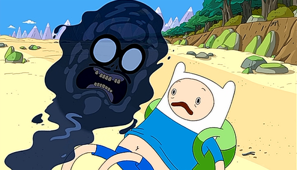

Aparece a manifestação do medo do oceano saindo do seu umbigo
"Você tem medo demais do oceano para ser um heróis de verdade""

O que o Finn vai fazer?
1 - "Eu vou controlar o meu medo". Correr pra agua pra provar que a manifestação do medo está errada.
2 - Pedir ajuda pro Jake
3 - Ver que o medo tem razão e desistir.